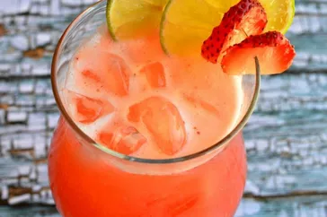

Mexican Strawberry Water

Description
Aguas frescas[1][2] (English: cool waters, lit. 'fresh waters') are light non-alcoholic beverages made from one or more fruits, cereals, flowers, or seeds blended with sugar and water. They are popular in Mexico and some other Latin American countries, as well as parts of the United States such as the Southwest. Some of the more common varieties include tamarindo, jamaica, and horchata.
Aguas frescas are sold by street vendors and are commonly found in convenience stores, restaurants and juice bars.[3]
Ingredients
- 4 cups strawberries, sliced
- 1 cup white sugar
- 8 cups cold water, divided
- 5 cups ice for serving, or as needed
- 1 lime, cut into 8 wedges
- 8 fresh mint sprigs
Steps
- Mix together strawberries, sugar, and 1 cup cold water in a medium bowl. Cover the bowl with plastic wrap and place in the refrigerator for 4 hours.
- Pour chilled strawberry mixture into a blender. Blend on high until smooth. Pour through a wire mesh strainer set over a large bowl; discard pulp and seeds. Stir remaining 7 cups cold water into strawberry juice until aqua de fresca is well combined.
- Fill glasses with ice. Pour aqua de fresca over ice. Garnish each serving with lime wedges and mint leaves.